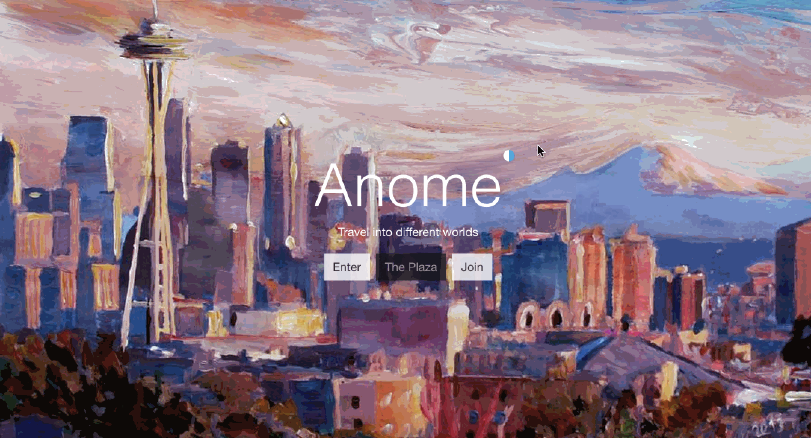
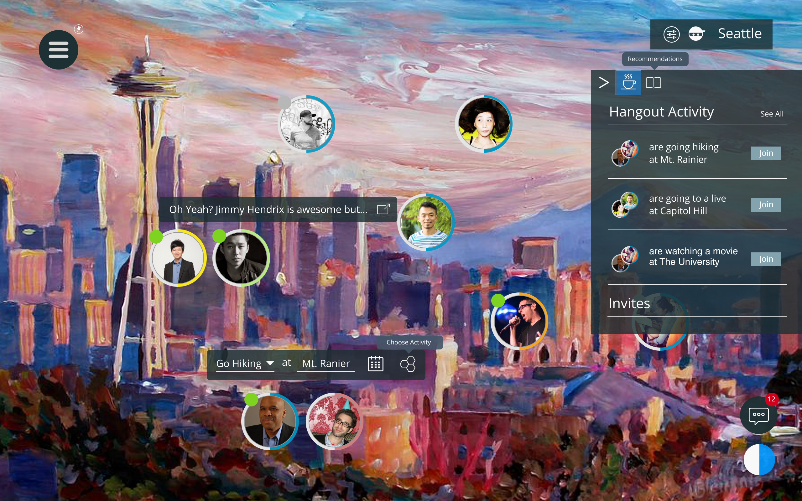
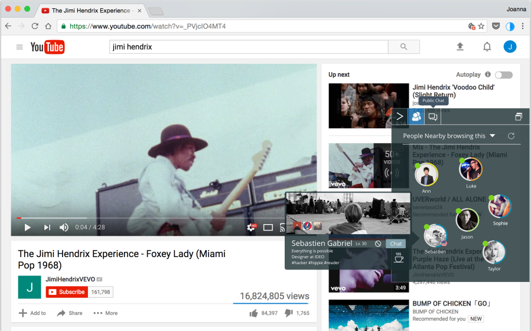
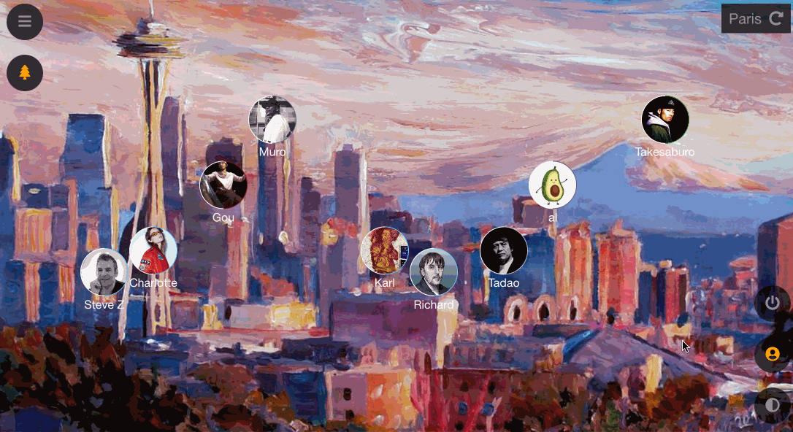
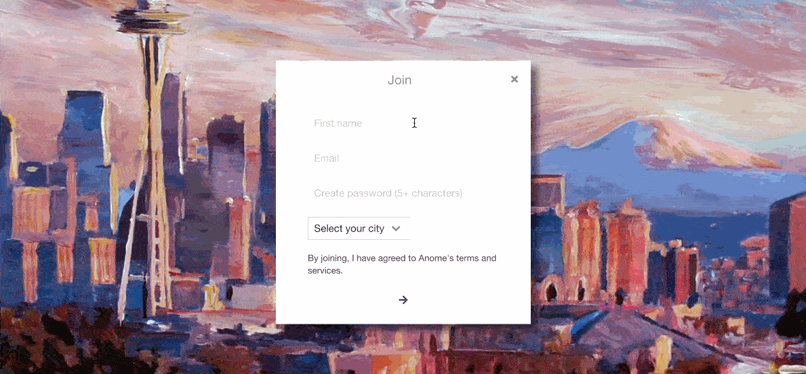
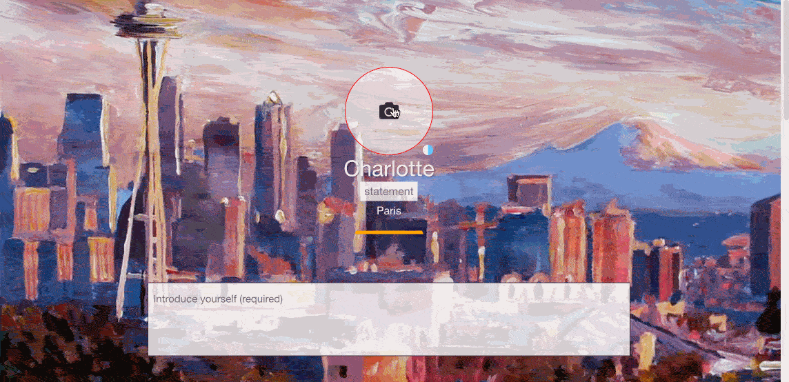
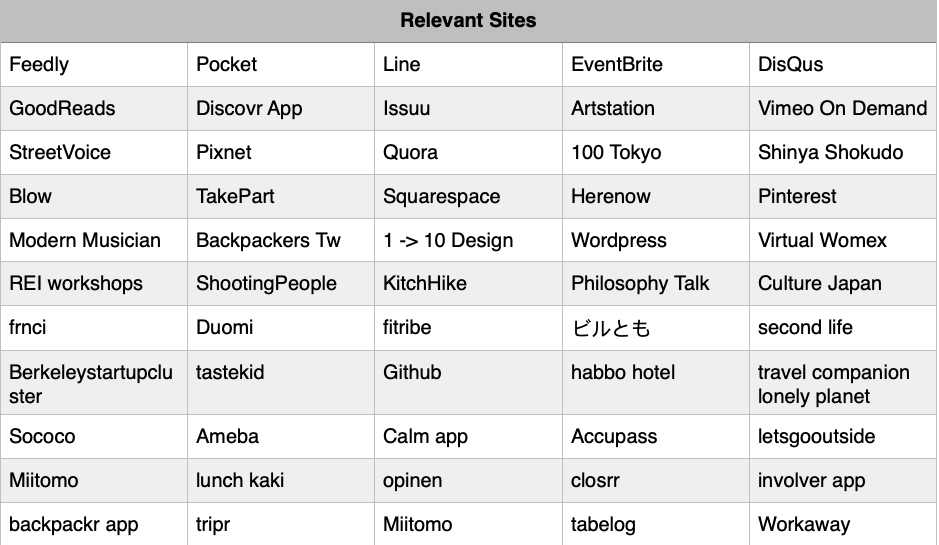

Anome
VR and Web3 Social App Vision
Product Design & Development
2016 - 2019
Redesigning how people interact with self and other.
Anome is a social network that connects students and mentors with similar interests and shared activities. It is an online plaza for people and ideas to grow.
Design concept prior to rounded profile photos, Discord, Airbnb Experience, Facebook Event, The School of Life Social App Discovery, Co-founder matching, IRL, Mapstr, Rec Room, Pokemon Go, Ready Player One, OpenSea NFT Marketplace, Meta Horizon, Meta marketing, ADPList, VR arcades, VR Voyages, and Metaversity Virtual Reality.




Problem
Access to people and ideas are limited by educational experience, finances, and geography. The quality of work depends on the quality of source.
Goal
To help people discover people, products, and places that would allow them to improve and be themselves.
MVP



The Journey
The Market & Culture
The Gaming and Virtual Reality Landscape
In 2014, out of love for games, I was mainly inspired by the popular anime, Sword Art Online, and created an interactive VR vision to describe and design for a concept of an interface and games in Virtual Reality.

In 2015, I wrote a paper on virtual reality history and researched technologies that helped me pitch concepts, such as sensory VR experiences, to
Professor Furness at the Human Interface Technology lab at the University of Washington. I saw how VR could solve the access to education and provide an immersive experience.

Initial Research
Problem Discovery
In 2016, I looked at current problems on social media (Facebook) and interviewed students on campus at the time.
- Hard to find new, local events relevant to interest
- Cannot see list of events friends are going to
- Does not discuss what technology means in terms of socialization and who we are
- No user feedback system to improve Facebook
- Collects User Data without informing user
Gathering research and user stories from 20+ websites to form concepts on the site's user experience:
We studied the effects of different types of purpose and found that an altruistic and a ‘self-expansive’ purpose were much more strongly associated with well-being. - Steve Taylor
A study by Nurra and Oyserman (2018) showed that children that were guided to experience connection between their current and adult future self, worked more and attained better school grades than children guided to experience low connection
The bigger your world – the more varied the people you know; the larger the number of different places you’ve traveled; the broader the collection of skills you have developed at least base-level proficiency at – the more truly free you become.
This was like spending time in a calm and cost cafe with like minded friends... This one is like a book club. All participants are interested in the topic and you get to hear different views and opinions and you get to share yours as well.
It is much easier to find someone who is already the way you want him or her to be, instead of trying to change that person.. we have to be what we are, so we don’t have to present a false image. - The Alchemist
Analyzing ~50 responses from all over the web and ~50 articles, some more inspiration:
Harvard’s campus was meant to offer students the possibility of forming relationships with well-connected peers and professors, a social environment that could multiply opportunities
Knowing thyself is an obstacle to acknowledging and making peace with constantly changing values. If you know thyself to be such-and-such kind of person, this limits your freedom considerably.
We don't want the player to just think he had fun upon clearing it, but that he acquires some kind of wisdom, something that he can use in the future
Disney makes the que part of the experience build up excitement and give context and backstory to most rides.
What is Nike doing in their advertising? They honor great athletes and they honor great athletics.
I discovered that:
- People value experiences and emotional connection with each other over material possessions
- One's concern about one's social constraint affects one’s friendship making ability
Competitive Analysis
I looked at major competitors:
- Facebook - Connecting with friends not about discovering new friends
- Google - Organizes information by algorithms not by human-centered values
- Tinder - Matches people based on physical characteristics
- Meetup - Not for meeting individuals
- 7 Cups - Temporary emotional support

I wondered, how might we create an environment and system that promotes diversity and helps connect people by their character not by their physical appearance or environment? What makes travel feel like travel? How might we help people leave a legacy?
How might I design something human and innovative, something that unifies the research I've done, different disciplines, different devices into a single, simple interface? What makes something have eternal value? How could I design something that felt right, good, and human, something that has eternal value?
Philosophy Model
I studied how Jobs approached Apple's philosophy and incorporated philosophy and culture into the design:
To be truly simple, you have to go really deep - Jonathan Ive
I wanted to create a balanced space, in which every material is related to one another... The coherence of a work depends on the subtle interaction of all the creative touches - Frank Lloyd Wright
What we think of as reality is a continuous synthesis of elements from a fixed hierarchy of a priori concepts and the ever changing data of the senses - Zen and the Art of Motorcycle Maintenance
Inventing the future wasn’t just a matter of inventing things for the future; it also entailed inventing ways to invent those things - The Idea Factory
The reason everything looks beautiful is because everything is falling out of balance, but the background is in perfect harmony
Hayek argued that—that each individual only knows a small fraction of what is known collectively—and that as a result, decisions are best made by those with local knowledge, rather than by a central authority.
I extensively documented and followed Steve Jobs' philosophy and advice (wrote a Medium article on this), such as "to connect two experiences together then you have to not have the same bag of experiences as everyone else does." I took different courses in Acting, Anthropology, History of Technology, and Cognitive Science to broaden my perspective. I read books by people at the top of their fields, such as Frank Lloyd Wright and Gerogia O'Keeffe. I followed passion and intuition while balancing art and science. I studied what makes Apple design five star experiences, taking inspiration from BMW Z8 and Henckel knives. I also wrote a draft of my book (On the Origin of Ideas) at this time, documenting the process of exposure, filter, selection and value resonance.
Visual Style
Keeping these ideas and issues in mind, I gathered various design components and styles from websites and games and mapped out all potential features.


Behind the Scenes


Realizing the designs were too complicated for production, I refined the core features. To make meeting others easier and friendlier, I recalled the concept of a plaza from Second Life, a game I knew from my immersive environments class, and integrated this metaphor into the social networking web application.
Solution
- When you experiment with internal narratives, you can visualize external outcomes
- See different viewpoints by seeing what others read
- Invisibly labeled values that approximate users' preference
- Gamify process to combat fear of failure in real world situations
Design Outcomes
- Plaza InvertScroll : Explore cities like a traveler, foster organic encounters
- Discovery settings : Help small brands get discovered
- Coffee invites : Organize casual, scheduled invites/mentorship for the busy
- Received/Accepted invites : Choose who you want to interact with and what help you can offer
- Rounded profiles, Direct edit profiles : Human-centered
- Custom colors : Expression of Individuality
- Cross-platform identity : Connect to wallet
- Cinematic intro : Immersive experience
- Explore another side of yourself / Discover yourself (who you want to be) through others
- Internal (private) discovery settings, external (public) profile presentation
- Transparent icons
- Unify web/MR/OS with a single interface and identity (prior to Google sign-on, different server names, location switching)
The reason I started this project is because I discovered an app called Duomi on my iPhone, which helped me discover artists I never would have discovered before. I also wanted to reduce misunderstandings among people and help connect different cultures, fields, and social classes.

References
How We Judge Others Is How We Judge Ourselves
A New Model and Dataset for Long-Range Memory
How Einstein Learned Physics
To Be True to One’s Self Means Changing to Become That Self
The Enduring Allure of Choose Your Own Adventure Books
... and more.
Artwork by Markus Bleichner.
Inspired by the Japanese rock band Uverworld.
Crafted with heart.
Design & Research: 1 year
Development (2019): 3 months web, 3 months ios
Technologies used: Sketch, HTML, SCSS, React, Redux, JWT auth, Express.js, MongoDB, Heroku
https://gitfront.io/r/jolux/mHe7dRzX7SEC/anome/
My Notes.